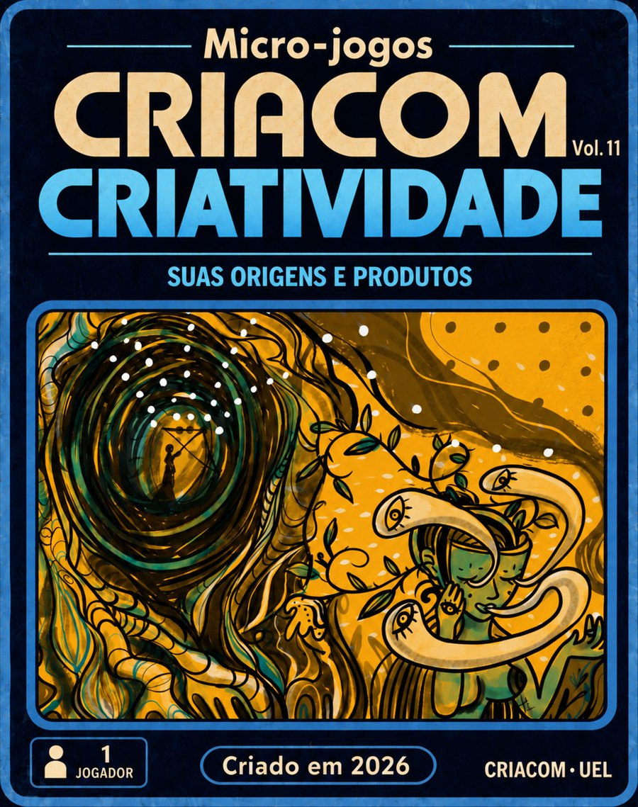
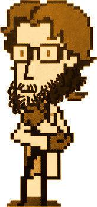

Criatividade
Perguntas sobre o livro de Hernando Borges Neves Filho (2018), um capítulo de cada vez, em quatro níveis: Easy, Normal, Hard e Ultra Behaviorist. O jogo acompanha cada conceito que você acerta ou erra e aponta a página exata para reler.
Escolha o capítulo
Setas movem · Enter escolhe · Esc voltaNível
Mesmo capítulo, quatro públicos. O Ultra Behaviorist abre quando você faz 70% ou mais no Hard.
Duas obras reproduzidas no capítulo, em alta resolução, com o contexto de cada uma.
Guia de leitura do capítulo
Trilha seção por seção, glossário, trechos curtos, figuras e as questões de estudo do livro.
Mapa de domínio
Cada pergunta está ligada a um conceito do capítulo. Dominado: três ou mais acertos nas últimas quatro tentativas, incluindo a mais recente. Passe o dedo ou o mouse para ver as páginas.
Por onde começar
Glossário
Temas principais
Figuras do capítulo
Questões de estudo do livro
Tente responder antes. Cada questão tem um modelo de resposta completo, com as páginas do livro, liberado por clique.
Por que isso importa no resto do livro
LEIA O TRECHO
Registro cumulativo
Cada degrau é um acerto. Eixo x: tempo da rodada. Traço plano = erro ou pausa.
Latência por pergunta
Tempo até a resposta, em segundos. Barras hachuradas = erros; ponto = dica usada.
Conquistas
Meu desempenho
Acurácia por conceito
Porcentagem de acertos por conceito, somando todas as rodadas. Barra clara = dominado; laranja = errou a última ou está abaixo de 60%.
Evolução ao longo das rodadas
Cada ponto é uma rodada; a letra indica o tipo (E, N, H, U; R = revisão dirigida; A = aleatório).
Banco de rodadas
Cada rodada concluída neste navegador, da mais recente para a mais antiga.
CONGRATULATIONS!
Você terminou o jogo.

Easter egg: David Lynch Teaches Typing (rhinostew, itch.io) é o jogo indie que inspirou os Micro-jogos CRIACOM. Abre numa nova aba.
MICRO-JOGOS CRIACOM · VOL. 11
Livro-base: Hernando Borges Neves Filho, Criatividade: suas origens e produtos sob uma perspectiva comportamental (2018)
Ilustração de capa: Talitha Lobato · Obras do Cap. 2: Olavo de Faria Galvão
Orientador em campo: Boatacon
CRIACOM: CRIAtividade & COMportamento · UEL
OBRIGADO POR JOGAR